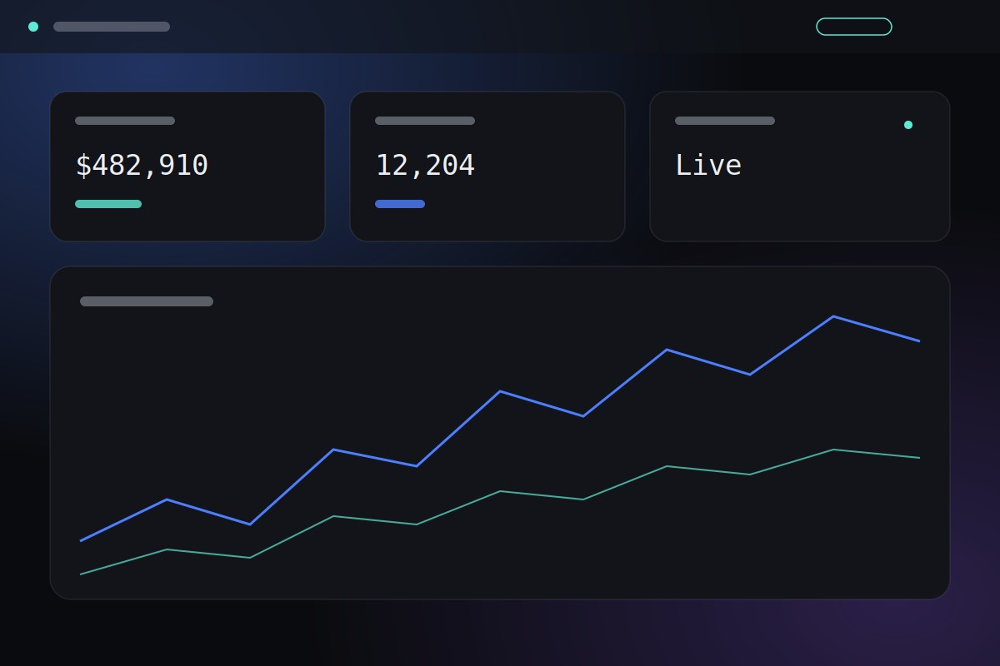
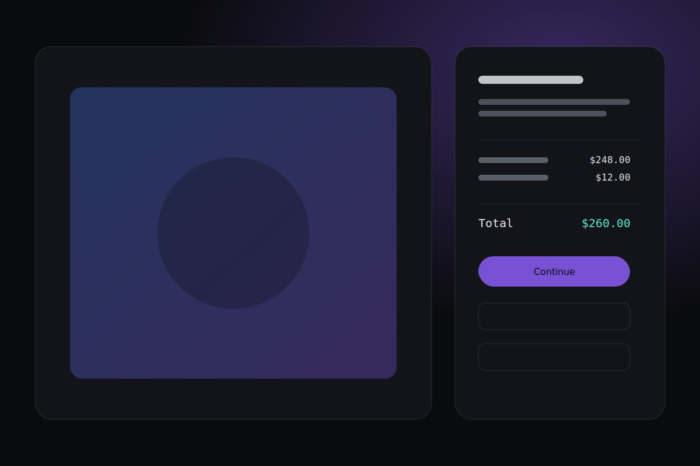
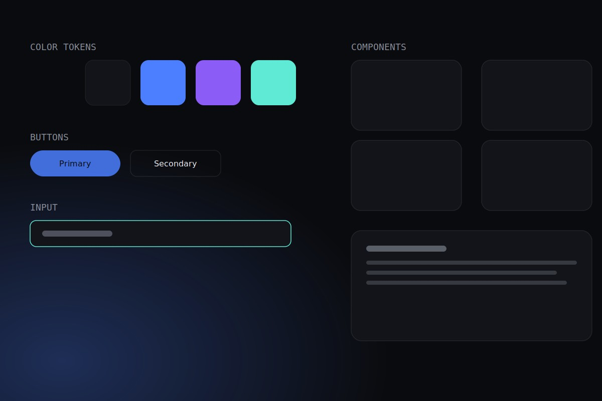

Fintech · Dashboard
Ledger — real-time reporting for treasury teams
Rebuilt a reporting dashboard around one constraint: legacy data endpoints we couldn't touch. The fix made data staleness visible instead of invisible.
Projects
Each one below includes the real constraint I was working under and the decision I made because of it — not just a screenshot and a stack list.

Fintech · Dashboard
Rebuilt a reporting dashboard around one constraint: legacy data endpoints we couldn't touch. The fix made data staleness visible instead of invisible.

E-commerce
Slowed a checkout flow down instead of speeding it up, after recordings showed rushing was the actual problem.

Design systems
Scoped a design system down, not up — sized to what five engineers could actually maintain.
Nothing here yet in this category — try another filter, or see everything.
I add projects here as they wrap up, not before — so everything above is finished, shipped work.